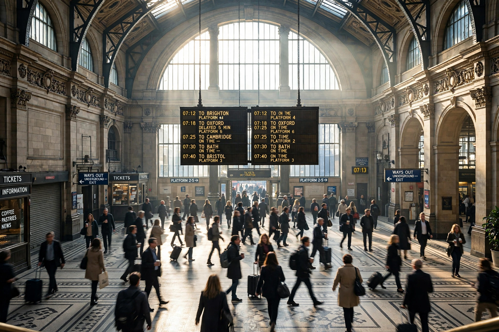

Top stories
Lead report from correspondents around the world

The Times homepage opens in a multi-column newspaper layout with a central lead story, live coverage panels, and columns of headlines across world, US, politics, business, culture and opinion — with many stories behind a subscription paywall.
Politics and elections
Reporting and analysis from Washington.
Business and markets
Economy, markets and technology coverage.
Arts and culture
Reviews and reporting on film, books, theatre and music.
Opinion
Editorials, guest essays and columnists.